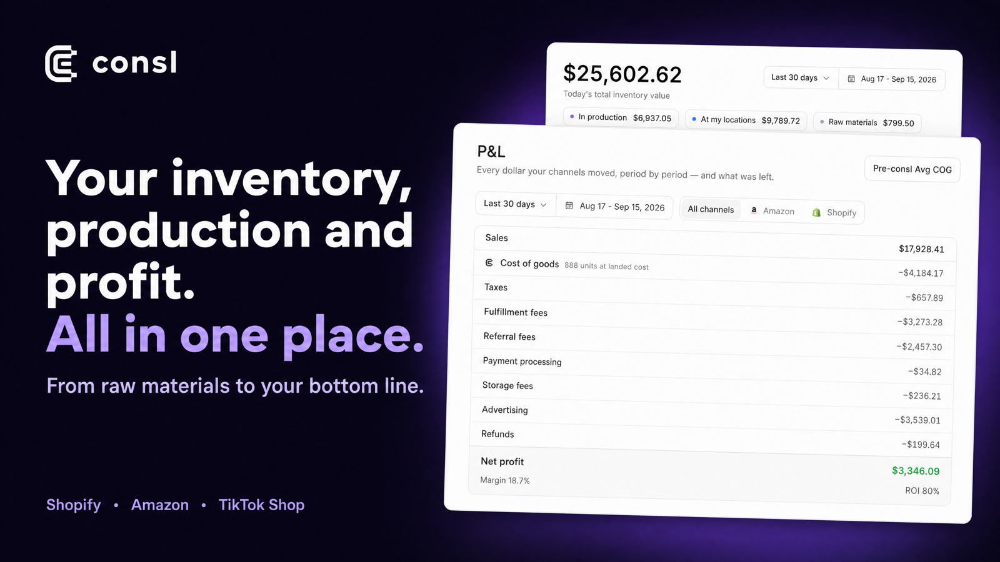
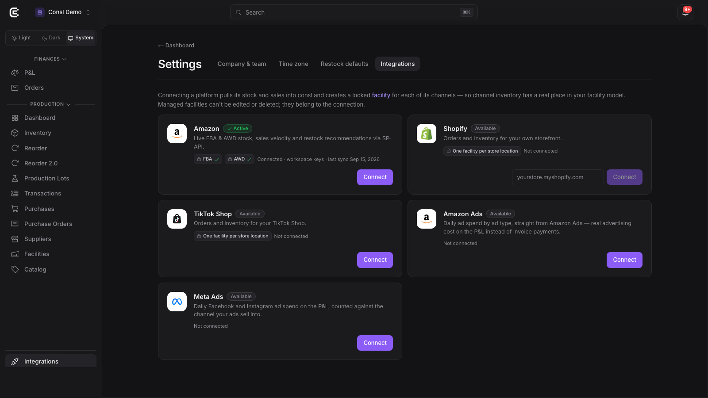
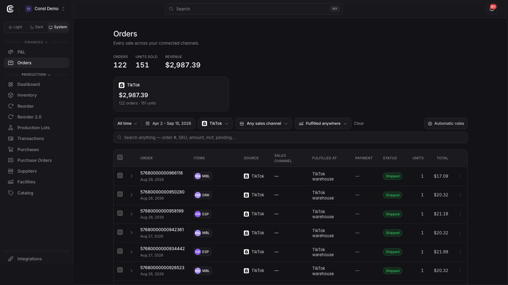
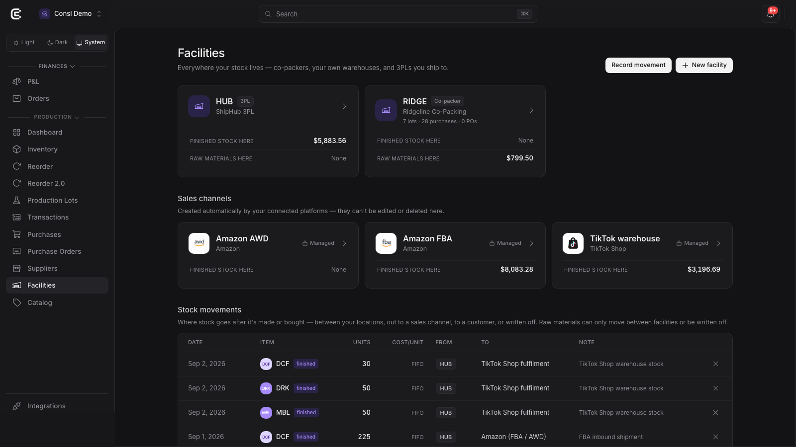
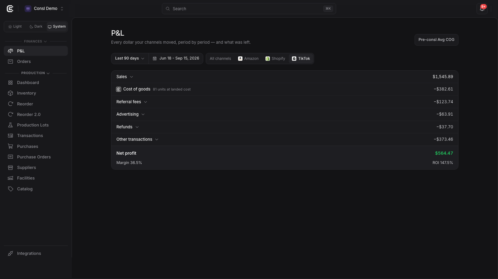
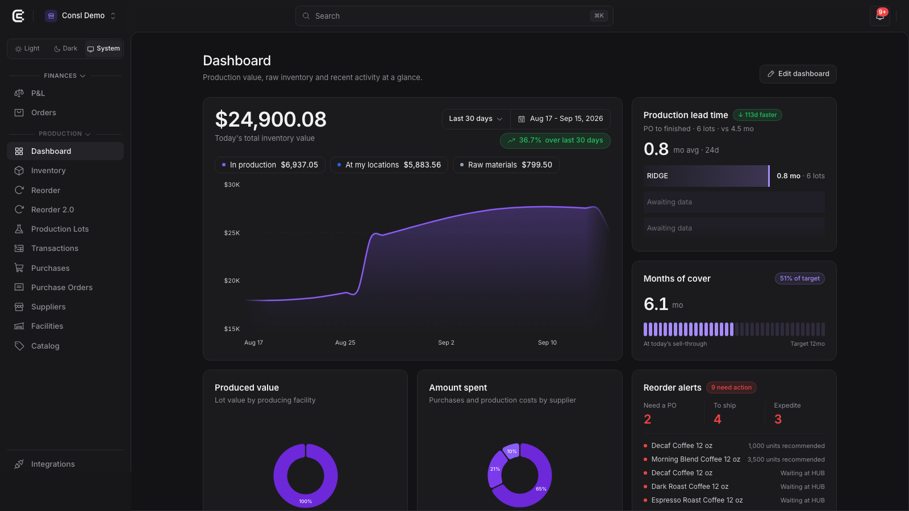
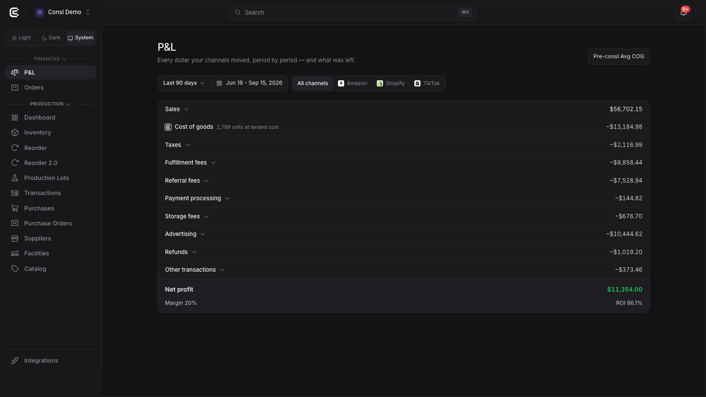

consl is an operations console for brands that manufacture or assemble their own products and sell them on TikTok Shop, Shopify and Amazon. It keeps one set of books for the whole business: raw-material purchases, production batches with their landed cost per unit (FIFO), finished stock at every warehouse and channel, orders from every channel, and a profit and loss statement per channel that includes the platform's own fees.
The TikTok Shop integration lets a merchant authorize their shop once and then see, inside consl, everything TikTok Shop already knows about their business: orders and their status, the warehouses stock ships from, how much stock TikTok reports at each warehouse, and the settlement lines that explain what the merchant actually earned on each order.
| Use case | What consl does | TikTok Shop data used |
|---|---|---|
| See all sales in one place | The Orders page lists TikTok orders next to Shopify and Amazon orders, with the same columns: items, source, warehouse it shipped from, payment, status, units, total. Filters by channel, date, warehouse and free-text search. | Orders (search + detail), warehouses |
| Know the real profit of TikTok sales | The P&L has a TikTok tab: gross sales, refunds, platform commission, transaction and shipping fees, affiliate commission, and the landed cost of goods for the units sold, giving net profit and margin for any period. | Settlement statements and transactions, unsettled orders, order line items (for units) |
| Keep TikTok warehouses stocked | Each TikTok warehouse is a facility with reported stock per SKU. Sales velocity per warehouse produces reorder alerts and planned quantities (produce, or move stock from another location) before the warehouse runs out. | Warehouses, product/SKU stock per warehouse, orders |
| Value channel inventory correctly | Units at TikTok warehouses are valued at the cost they carried when they were shipped there (FIFO layers), so the dashboard's total inventory value includes TikTok stock at true cost. | Stock per warehouse |
| React to order changes fast | Order status, cancellation and return webhooks tell consl which order changed; consl then re-reads that order from the API and updates it within minutes, including cancellations and refunds. | Webhooks (order status, cancellation status, return status), order detail |
| Map the catalog once | On connect, the shop's products are listed with their SKUs and images. Exact SKU matches are mapped to consl products automatically; the rest are mapped from a picker or ignored. | Products / SKUs |
Integrations → TikTok Shop → Connect sends the merchant to TikTok Shop's authorization page for the Consl app. After approval, TikTok returns the merchant to consl with an authorization code; consl exchanges it for tokens and immediately reads the shop's warehouses and products, then starts the order and settlement history import in the background. Only a company owner in consl can connect or disconnect a shop.

Every TikTok order with its line items, units, prices, seller discounts, tax, fulfillment type, warehouse and status. The list is refreshed every 15 minutes and immediately on webhook events. Cancelled and refunded orders are marked and excluded from sales figures.

Each TikTok warehouse becomes a locked facility ("managed by the connection"). Stock reported by TikTok per SKU and warehouse is shown as finished stock at that facility and valued at FIFO cost. Movements from the merchant's own locations to a TikTok warehouse are recorded so the books and the reported counts stay in step.

The P&L reads TikTok settlement statements and their transactions and buckets every line: sales, refunds, referral (platform commission), advertising (affiliate commission), and other fees (transaction, shipping). Cost of goods comes from consl's own FIFO engine for the units on each order. Orders not yet settled are shown as "pending" from the order data until the statement arrives.

The dashboard shows total inventory value across own locations and channels, production lead time, months of cover and reorder alerts. Sales velocity per warehouse (TikTok included) drives the suggested quantities and timing.

| What | How often | Notes |
|---|---|---|
| Shop identity | At connect, and whenever tokens are refreshed | Shop id, cipher and region are needed on every call. |
| Warehouses | At connect, then every 15 minutes | New warehouses become facilities; deactivated ones are hidden. |
| Products and stock | Products at connect and on demand (mapping screen); stock every few minutes | Reported quantity per SKU and warehouse. |
| Orders | Full history at connect; the recent window every 15 minutes; immediately on webhook | Webhook payloads are only a signal; the order is always re-read over the authenticated API. |
| Settlements | Statements and their transactions as TikTok publishes them; unsettled orders bridged from order data | Feeds the P&L per channel. |
| Token refresh | Before expiry, automatically | Access and refresh tokens rotate; both are stored encrypted. |
consl subscribes to ORDER_STATUS_CHANGE, CANCELLATION_STATUS_CHANGE and RETURN_STATUS_CHANGE at https://consl.ai/api/webhooks/tiktok. Each event is verified (HMAC with the app secret) and treated as a doorbell: it names the order that changed, and consl re-reads that order through the API in the background. Nothing is written from the webhook payload itself, so a forged or stale event can never alter data.
Token calls go to auth.tiktok-shops.com with the app key and secret. Every Shop API call to open-api.tiktokglobalshop.com carries app_key, timestamp, the HMAC-SHA256 sign computed with the app secret over path, sorted parameters and body, and the shop's access token in x-tts-access-token. API version 202309 is used, with 202501 and 202507 for the newer finance endpoints.
| Scope | Endpoints | Purpose in consl |
|---|---|---|
| Shop Authorized Information | GET /authorization/202309/shops | Identify the authorized shop (id, cipher, region) after authorization and on refresh. |
| Order Information | POST /order/202309/orders/searchGET /order/202309/orders | Order history and the recent window; re-read of single orders after a webhook. Order header, status, fulfillment type, warehouse, totals, line items (SKU, quantity, prices, discounts). |
| Logistics Basic | GET /logistics/202309/warehouses | Sales warehouses become facilities; return warehouses are skipped. |
| Product Basic | POST /product/202309/products/search | Product and SKU list for the mapping screen; reported stock per SKU and warehouse. |
| Finance Information | GET /finance/202309/statementsGET /finance/202501/statements/{id}/statement_transactionsGET /finance/202501/orders/{id}/statement_transactionsGET /finance/202507/orders/unsettled | Settlement lines for the P&L: revenue, fees, commission, affiliate, refunds, shipping; unsettled orders shown as pending. |
| Fulfillment Basic; Fulfilled by TikTok (FBT) Info | Fields on the order payload | Tell seller-fulfilled from TikTok-fulfilled orders, and the warehouse an order ships from. |
| Return & Refund Basic | Webhook RETURN_STATUS_CHANGE; refund lines on statements | Mark refunded orders and book refunds in the P&L. |
| Webhook management | GET/PUT /event/202309/webhooks | Register the three event subscriptions at connect and keep them pointed at consl. |
| Global Product Information; TikTok Shop Analytics | — | Granted for cross-border catalogs and shop analytics; not read by the current version. |
consl requests no write scopes. It never calls endpoints that create or change orders, products, prices, stock or shipments.
| Object | Fields kept | Not kept |
|---|---|---|
| Order | TikTok order id, created/updated times, status, cancellation flag, fulfillment type and warehouse, payment method name, totals (product gross, discounts, tax, shipping, total, currency), ship-to city, state and country only. | Buyer name, street address, phone number, e-mail, notes, any identifier of the buyer. |
| Order line | Seller SKU, quantity, list and sale price, seller discount, link to the consl product. | — |
| Warehouse | Warehouse id, name, type, address (business address of the warehouse). | — |
| Product / SKU | Product id, SKU id, seller SKU, title, image URL, price — for mapping only. | Descriptions, videos, listing content. |
| Stock | Reported quantity per SKU and warehouse, with the time it was read. | — |
| Settlement | Statement id, order id, line type, amount, currency, settlement and order dates, SKU and units when the line is item-level. | Bank or payout account details. |
| Tokens | Access and refresh tokens, encrypted at rest; shop id, cipher, region. | Tokens are never shown in the UI or logs. |
The review account provided in the submission opens the company Consl Demo, a fictional brand with demo data already loaded, including a TikTok channel: TikTok orders on the Orders page, a TikTok warehouse with stock on Facilities, and a TikTok tab on the P&L. To test authorization end to end, connect a test shop from Integrations; its orders, warehouses and stock then import automatically.
Bluesteam LLC — admin@consl.ai — https://consl.ai. Privacy policy: https://consl.ai/privacy. Terms: https://consl.ai/terms.
All screenshots show the Consl Demo company (fictional data).
